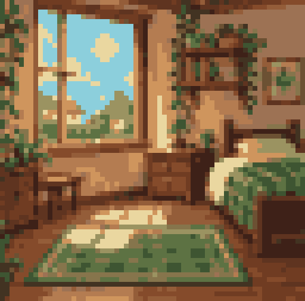
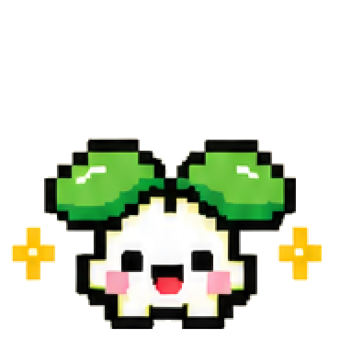
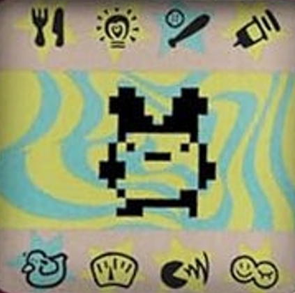
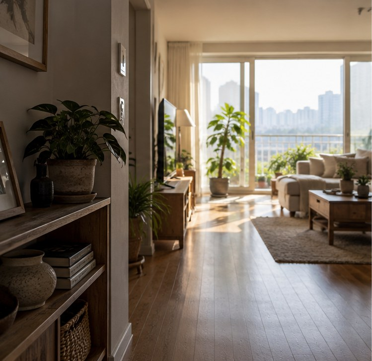
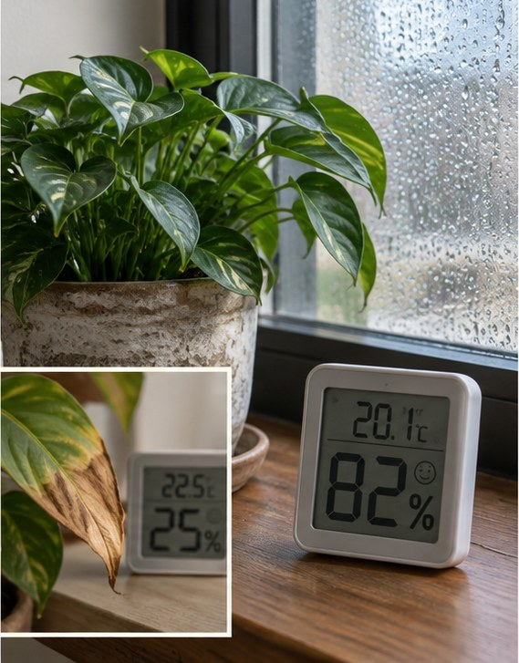
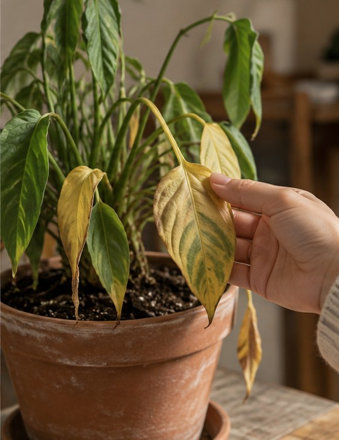
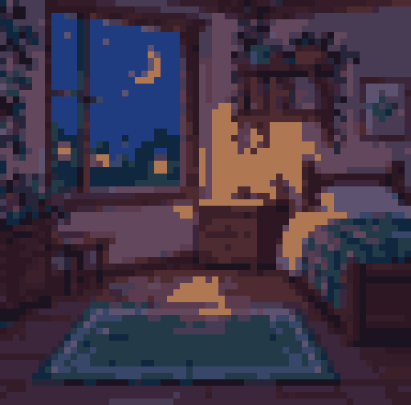
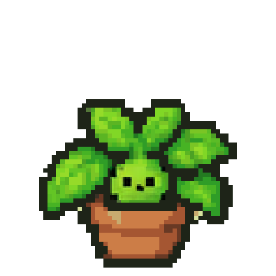
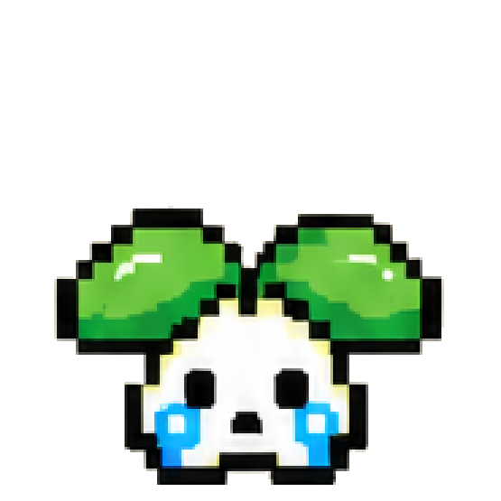
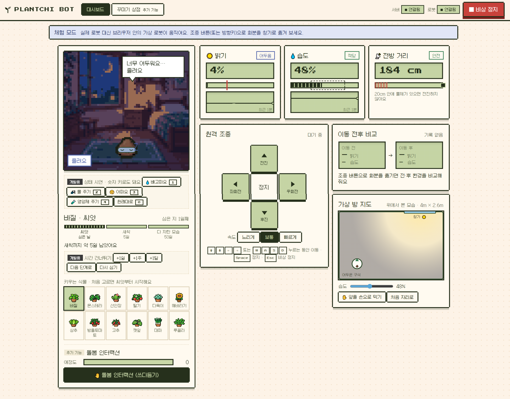

식물 다마고치 대시보드 × Raspberry Pi 로봇
식물이 표정으로 말하고,
웹으로 조종해 밝은 자리로 옮기는
이동형 스마트 화분



동물은 소리와 몸짓으로 필요를 알리지만, 식물은 사람이 살펴봐야 알 수 있습니다

창가에서 멀어지면 빛이 부족하지만, 사람 눈으로는 알아채기 어렵습니다.

식물이 느끼는 실내 습도 변화는 사람이 느끼는 것과 달라 놓치기 쉽습니다.

잎이 처지고 색이 바랜 뒤에야 문제가 있었다는 걸 알게 됩니다.
센서로 재고, 서버가 판단하고, 캐릭터가 알리고, 사람이 로봇으로 돌봅니다
센서로 밝기 · 공기 습도 · 앞 거리를 측정
서버가 측정값을 기준값과 비교해 식물 상태 결정
캐릭터의 표정과 메시지가 바뀜
사용자가 웹으로 로봇을 원격 조종 · 위험하면 이동 제한
느끼고, 생각하고, 표정으로 보여 주고, 움직입니다
| 부품 | 하는 일 | 기준 · 비고 |
|---|---|---|
| Raspberry Pi 5 | 로봇 프로그램과 FastAPI 서버를 실행하는 중심 컴퓨터 | 웹 대시보드도 여기서 제공 |
| Raspbot V2 | 4바퀴 이동. 확장 보드가 모터와 내장 초음파를 I2C로 제공 | 최대 속도 0.5로 제한 |
| Arduino Uno | Pi에 없는 아날로그 입력 대신 센서를 읽어 USB로 전송 | 0.1초마다 한 줄 |
| LDR 조도 센서 | 빛의 양 | 60% 미만이면 "어두움" |
| DHT11 | 공기 상대습도와 온도 | 2초마다 측정 · 흙 수분 아님 |
| 내장 초음파 | 앞 장애물까지의 거리 | 20cm 미만이면 전진 차단 |
센서값을 기준값과 비교하는 규칙 기반 판단입니다 (학습된 AI 모델이 진단하는 방식이 아님)
밝고 습도가 알맞을 때
"빛이 충분해요! 기분 좋아요"


조도 0.6 미만일 때
"너무 어두워요… 졸려요"

습도 30% 미만일 때
"공기가 너무 건조해요… 목말라요"
습도 80% 초과일 때
"너무 눅눅해요… 바람이 필요해요"

A B C D E F왼쪽 로봇 · 오른쪽 웹 화면
클릭 또는 K 키로 재생 · 멈춤
촬영 장소가 어두워 밝기 55~58% · 계속 "졸려요" 상태입니다
기준은 20cm · 감지 후 조금 더 가서 멈춥니다
처음부터 크게 만들지 않고, 연습 → 범위 → 약속 → 가짜 장치 순서로 준비했습니다
프로젝트 전에 팀 취미 소개 웹사이트로 브랜치 · PR을 먼저 연습
표정 2개 + 버튼 1개에서 시작해 "꼭 동작할 것" 8개로 확정
AI 대화는 추가 기능으로
주고받을 데이터 형식과 API를 먼저 문서로 정해, 따로 만들어도 맞물리게
센서 · 모터 없이도 Mock(가짜 장치)으로 개발 · 테스트, 실물은 확인 후 적용
운영 · 일정 · GitHub 관리
센서 · 로봇 구현
하드웨어 통합 · 실기기 검증
웹 대시보드
캐릭터 · 원격 조종 UI
최종 발표
FastAPI 서버 · 상태 판단
Pi 데이터 수신 · 통합
발표 자료 초안
문서화 · QA
발표 자료
시연 자료
해야 할 작업 38개를 등록하고 담당자와 일정을 정했습니다.
각자 맡은 기능을 개발하면서 진행 상황을 공유했습니다.
기능이 작동하는지 확인하고 미완료 작업도 구분했습니다.
개발한 코드를 확인한 뒤 하나의 프로젝트로 합쳤습니다.
센서 → Raspberry Pi → 서버 → 웹 화면까지 실제 데이터가 이어졌습니다
그날 기록: 밝기 0.911 · 습도 69% · 거리 50.7cm → 캐릭터 "기분 좋아요"
남은 과제: 실제 모터 연결과 안전 기능 시험
| 문제 | 어떻게 했나 | 결과 |
|---|---|---|
| ① 코드 충돌 · 서로 다른 사람이 수정한 코드가 충돌 | 변경 사항을 비교해 하나로 통합 | 로봇에서 시험 후 11/1 합침 |
| ② 네트워크 · 작업 공간에 Wi-Fi가 없었음 | 휴대폰 핫스팟으로 연결해 전날 사전 점검 | 10/31 팀원 PC로 접속 성공 |
| ③ 코드 배포 · 로봇 컴퓨터로 코드 옮기기가 어려웠음 | 프로젝트 파일을 묶어 안전하게 복사 | 버전마다 보관해 되돌릴 수 있음 |
센서와 컴퓨터 사이의 데이터 연결을 구성해야 했습니다.
Arduino가 읽어 USB로 전달
가만히 있을 때는 되던 센서가 움직이면 끊겼습니다.
→ C 거리 센서 교체
버튼을 놓아도 바퀴가 계속 움직이는 경우가 있었습니다.
→ D 바퀴 정지 개선
처음 사용한 거리 센서는 로봇이 움직이면 연결이 불안정했습니다.
배선을 다시 연결하고, 얼마나 안정적으로 측정되는지 확인했습니다.
로봇 본체에 고정된 내장 센서로 변경했습니다.
거리를 모르면 전진하지 않습니다.
센서를 교체한 뒤 실제 주행 중 장애물을 감지해 멈추는 동작을 확인했습니다.
웹에서 버튼을 놓았는데도 바퀴가 계속 움직이는 경우가 있었습니다.
정지 명령은 모두 보내졌지만, 실제 모터에 반영되지 않은 것으로 보였습니다.
정지 상태에서도 정지 명령을 반복해서 보내도록 변경했습니다.
수정 후 제한된 실기기 시험 4회에서 정상적으로 멈추는 것을 확인했습니다.
로봇 테스트
서버 테스트
통합 테스트
자동 테스트 수치는 11/2 최종 코드 기준이며, 라즈베리파이에서 모두 통과했습니다 · 추가 개발 과제는 다음 장에서
Q&A
말 못 하는 식물에게
표정과 다리를
궁금한 점을 편하게 질문해 주세요 · 감사합니다